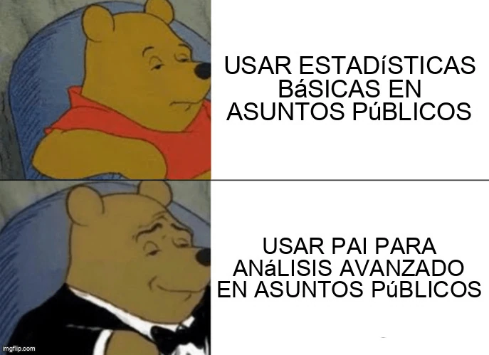

estrategIA #22 ·
Datos para los asuntos públicos
El contexto
PAI significa aquí inteligencia artificial predictiva, según la explicación de Gustavo Fedi en el número. La transformación de Winnie the Pooh en un personaje elegante exagera el salto desde estadísticas básicas hacia modelos para analizar y anticipar escenarios.
Publicado en: estrategIA #22 La era de la inteligencia artificial en asuntos públicos: construyendo puentes entre datos y decisiones
Leer el texto de la imagen
USAR ESTADÍSTICAS BÁSICAS EN ASUNTOS PÚBLICOS USAR PAI PARA ANÁLISIS AVANZADO EN ASUNTOS PÚBLICOS
Marca de la herramienta visible en el original: imgflip.com.